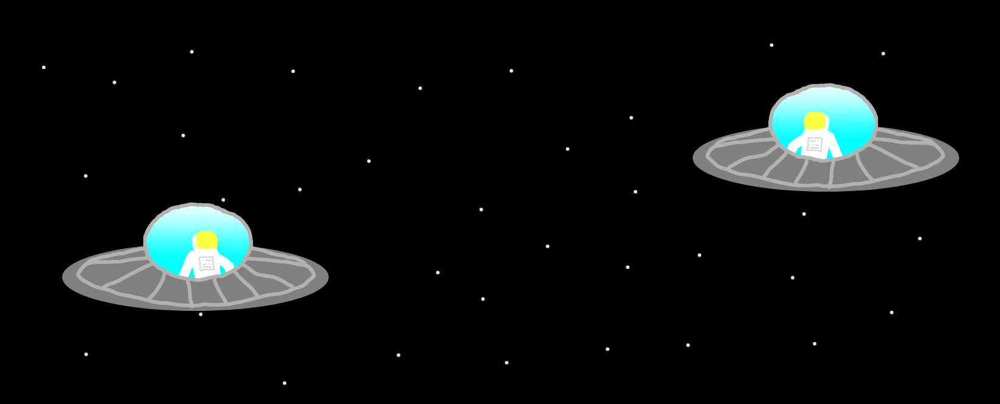

We don't know if our universe is finite or infinite, but if it were infinite, then something extraordinary must be true; to understand it, we have to have to travel incredibly far away.
Everything in the universe is made up of particles. Think about our galaxy, the Milky Way. It consists of an unimaginably large number of particles, but it's not infinite, and because of that, those particles can only be combined in a finite number of ways. If we put a box around our galaxy so that no matter can enter or leave, and we wait an infinite amount of time, then those particles must eventually combine in every possible way, and then those combinations must repeat.
However, we know the universe is about 14 billion years old, so something like that shouldn't ever happen, right? Well, if the universe is truly infinite and you travel far enough, you should start to see all kinds of wacky things. But the number of wacky things you can see is finite, since particles can only be combined in a limited number of ways. That means if you travel unimaginable distances, you should eventually start to see things repeat, and one of those things should be you.
Confused? Don't worry. If the universe is infinite, then there must be somewhere out there where particles formed in the exact same way they did in the Milky Way, creating our solar system, the Sun, Earth, life, humans, and even you. Somewhere, incredibly far away, is an exact copy of you who did the exact same things your entire life and is reading this blog at the same time you are. In fact, there would be an infinite number of you in the universe reading this blog right now, each having lived the exact same life with the same memories.
The chance of such a doppelganger in a finite universe is so small that our brains can't even conceive of it, but that's the thing with an infinite universe: probability means nothing. If there is an infinite amount of space and matter, there must be an exact copy of you.
But is the universe infinite or finite? No one knows. It's been the subject of philosophical and scientific inquiry for thousands of years. We have no method of finding a definitive answer, and we assume that most of the universe is cut off from our view because we're confined to the observable universe. We're trapped inside a bubble of space and time, with no chance of ever peering beyond the cosmic horizon.